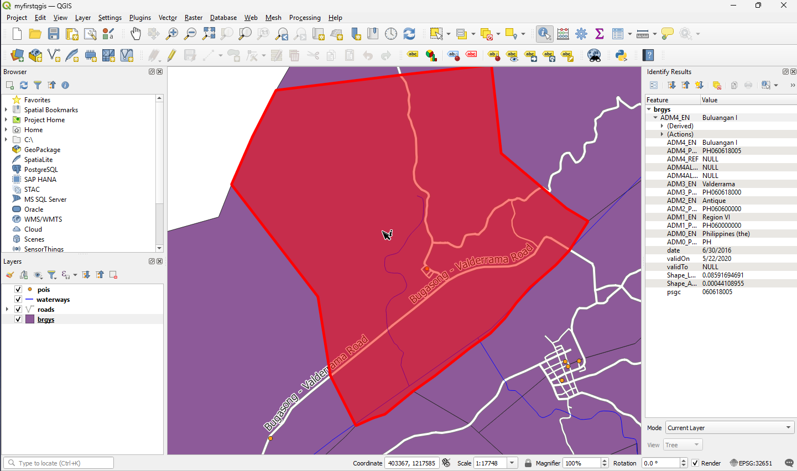
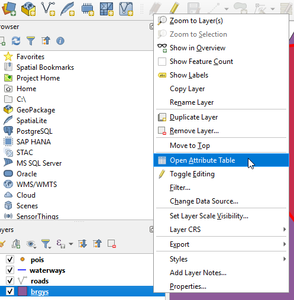
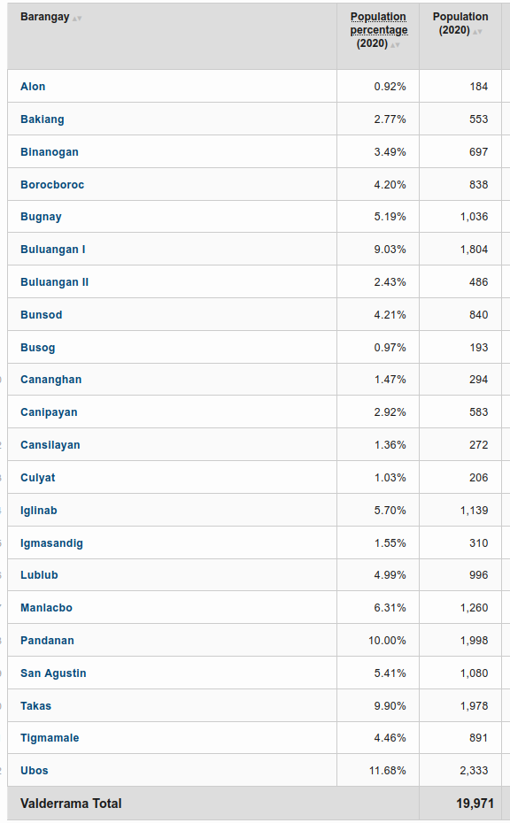
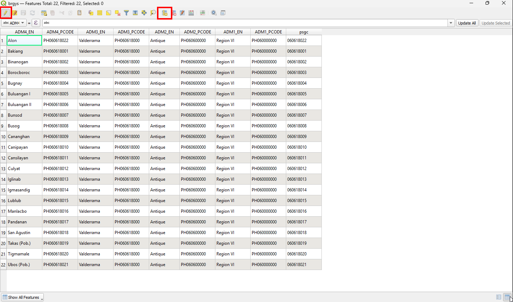
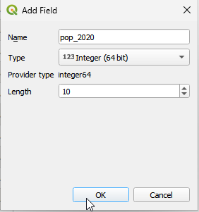
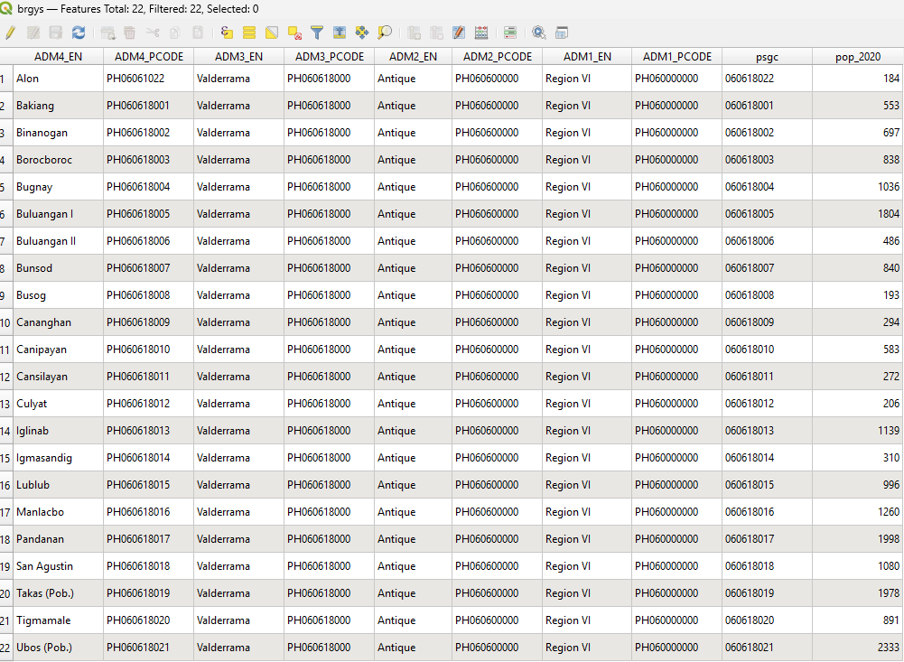
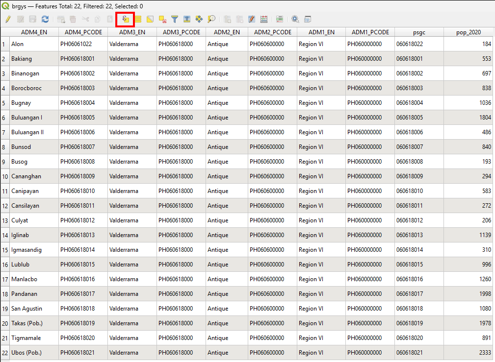
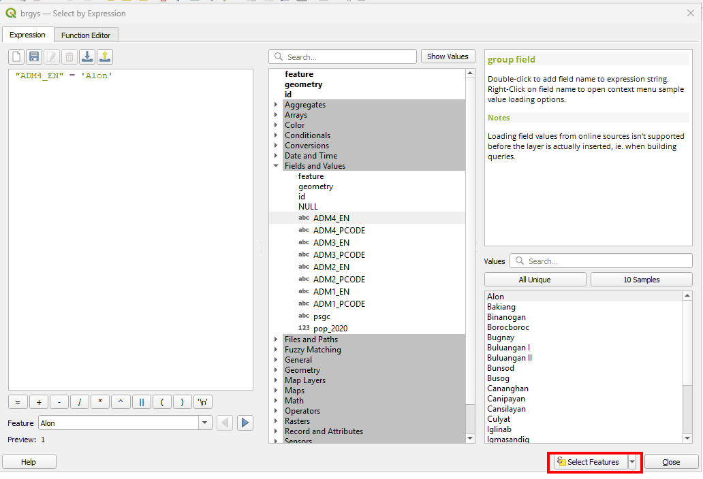
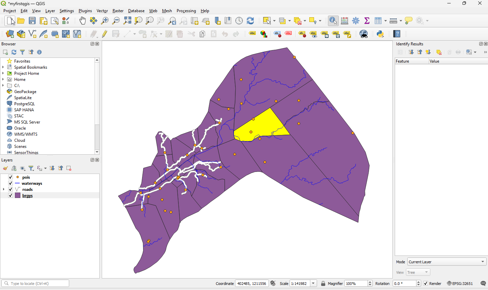
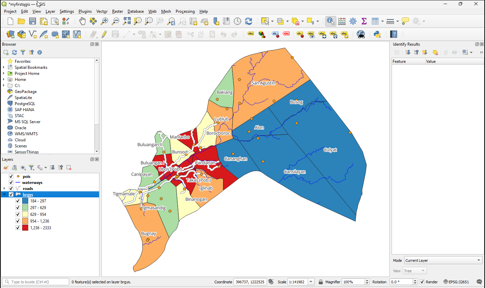

4. Managing Data Attributes
Attribute is non-geographic data associated with to any elements or data in GIS and usually in tabulated form. (In a
Shapefile vector format, this is contained in a separate file with dbf extension). A table is like a spreadsheet. Each column in the table is called a field. Each row in the table is a record. Each of the records in the attribute table in a GIS corresponds to one feature. The application “links” the attribute records with the feature geometry so that you can find records in the table by selecting features on the map, and find features on the map by selecting features in the table. Each field in the attribute table contains contains a specific type of data such texts, numbers or date.
4.1. Viewing Data Attributes
In QGIS you can easily view data attributes by either selecting the feature within the layer of interest or opening the full table.
To display the attribute table , select the
brgyslayer in Map layer panel. In the , select View –> Identify Features. Or just click the Identify Features in the toolbar.Click on any polygon in the map to show the feature attributes.
{kind=link}
{kind=link}

To view the attribute table similar to a spreadsheet, select the
brgyslayer in the Map Legend/Layers. Right-click the layer and select Open Attribute Table.
{kind=link}

A new window will appear showing the full table of the data layer. You can browse and edit the attribute table within this window.

A full explanation of the tools within the Attribute table window is presented below:
Unselect All - Remove selection from previous selected records
 Copy Selected Rows - Copy selected rows to
clipboard
Copy Selected Rows - Copy selected rows to
clipboard Zoom Map to Selected Rows - Zoom map to
selected rows
Zoom Map to Selected Rows - Zoom map to
selected rows Toggle Editing Mode - Toggle editing mode to
edit single values of attribute table and to enable functionalities described
below.
Toggle Editing Mode - Toggle editing mode to
edit single values of attribute table and to enable functionalities described
below. Delete Selected Features - Delete selected
features
Delete Selected Features - Delete selected
featuresNew Column - This adds a new column in the attribute table. You will be asked to provide attribute details in a new window (name, field type, etc.).
Open Field Calculator - Open field calculator to update attribute data based on arithmetic, logical and other calculations
{kind=link}
{kind=link}
{kind=link}
{kind=link}
{kind=link}
Explore the different tools to understand how each one works.
Tip
Shapefile stores attribute data in a separate file with a dbf
extension. This is a widely used GIS database format. You can edit the dbf
file outside QGIS using a spreadsheet application such as MS Office Excel and
OpenOffice Calc, however, caution should be taken in order not to corrupt the
files. Make sure you create a backup before editing the data outside QGIS.
4.2. Creating and editing attributes
We will update the brgys layer by adding population for each barangays
for the year 2015 census.
1. Open the attribute table by selecting the brgys layer
in the Map Legend. Right-click the layer and select
Open Attribute Table.
2. Scroll to the right most end of the table. We will add the population data in
the Population (2020 Census) column. To enable editing in the attribute table, click the
Toggle editing mode and New Field. The municipality
names are in the NAME_2 column. Start adding the population of each
municipality following the table below:
{kind=link}

{kind=link}

{kind=link}

{kind=link}

3. Click again the Toggle editing mode.
A prompt will appear and click Save edits to save your edits.
{kind=link}
4.3. Subset displayed data using table queries
QGIS can also limit the display of features to a subset of your data using attribute queries. It follows the standard Structured Query Language (SQL) used by other applications for managing databases. We will subset our data to display only the barangay/village within a specific town/city.
Select
brgys. Right-click and selectOpen Attribute Table.
Then, click the Select features using an expression and a new window will appear. A new window Select by expresion will appear.
{kind=link}
{kind=link}

In the Select by Expresion, click the
Field and Values–> ADM4_EN. ClickAll Uniqueto display all possible value for the selected field. Type “ADM4_EN” = ‘Alon’ on the expression field.
{kind=link}

The result will be displayed in the SQL where clause text box as,
"ADM4_EN" = 'Alon'
This SQL simply means that within the ADM4_EN attribute column, we will select
and display only the town polygon of Alon.
{kind=link}

Style your queried layer showing different colors base on the population for the year 2020. Use Graduated for style or load the .qml using from the data/Styles/brgy_pop.qml folder
{kind=link}

4.3.1. Additionnal Youtube Videos
The following videos will guide the users in adding a field and selecting a feature. Offline versions are also available in these links Video 1 and Video 2.